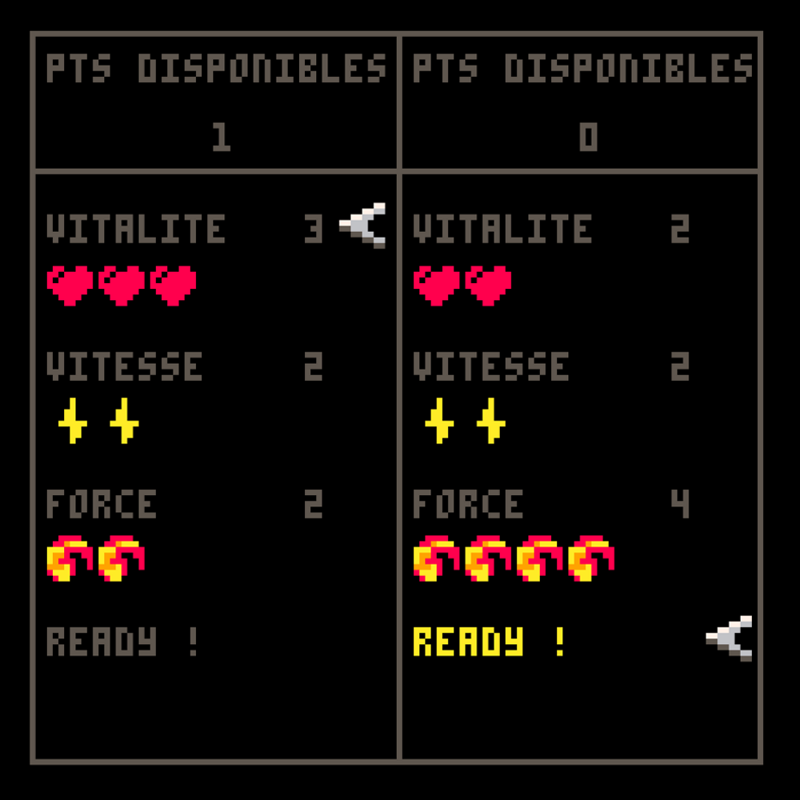

Article Written the : 31/12/2018
Project Made in : November 2017
In November 2017, we had to create a video game as a school project. The game engine we had to use was Pico8, a little and very limited game engine, perfect to replicate the first era of video games : sixteen predefined colors, a microscopic sprite sheet, 8 bit music and no other visual interface than a coding board.
Our teacher asked us to code a Pong game, and we had a week. Already experienced in coding, I finished the base product in less than a day, but I wanted to go as far as I could in terms of gameplay and code. And that's how Metapong was born.
In normal Pong, gameplay possibilities and strategies are weak, some would say inexistant. Up, down, just make sure to hit the ball. I decided to add a layer of gameplay on that, quite a simple one, actually : power ups. If you throw the ball into one of the randomly spawning power ups, you get quicker, you invert the enemy's controls or you accelerate the ball.
It was quite easy to implement. I just had to change some variables according to what happened in game. The hardest part was in fact to tell the code which player would benefit from the power up. I ended up saving the information of who was the last to hit the ball and using that to know who hit the power ups.
After some fine tunning of the variables, it was indeed quite fun. The added strategy of where to throw the ball was exciting. The stress of getting "hacked" followed by the extatic joy of winning anyway was delicious, and the "fireball" power up, making the ball go faster and faster, made sure the game kept being harder and harder for both player. But I still had most of the week and I wanted to practice more.
Instead of adding other power ups to the game at the risk of getting redundant, I decided to go a step beyond...and add other game-modes. First, I needed a menu to choose between the various modes my game would propose. Since I had already coded similar mechanics in Game Maker, it was an easy task. A "gamestate" variable to tell the game if we were in the menu or in game mode 1, 2, 3 or 4, and a "menustate" variable to know which gamemode was selected. But then...what game mode would be best ?
I love experimenting weird combinations of game mechanics. Using attacks to double-jump, a bullet hell with melee combos, or a over-heating mechanic in a space invader. Some work better than others, but what maters is the experimenting. So, what crazy "Science!" experience I would do this time ? Why not a Pong with character stats ?
And here I was, coding PnP, mutated child of Pong and DnD. The idea was indeed great, it helped me practice menus even more. The one game mode choosing menu was great, but now I had to manage two different menus, each one used by a different player. I reused the "Lightning" power up effect of making the player faster for the speed stat, but the health and strenght stats needed more code. After a handful of hours, PnP was ready with those three stats. The goal was the same as vanilla Pong : hitting the enemy side while making sure to block the ball. The difference was that each time you achieved to do so, you inflicted damage equal to your strength. Getting at 0 health ment death, and game over.
Two game modes in, and still two days to code the game ! I decided to use the remaining time to add a "Classical" game mode -just plain regular Pong in good old black and white fashion- and a "Survival" one. In fact, that last one was more like solo squash than ping pong. The goal was to last as long as possible, and each time the ball hit the other side of the screen -totaly unguarded- it got faster and faster. This game mode ended up being the hardest, and maybe my favorite.
I ended up getting quite a good grade, but more importantly, I had experimented a lot, and I had a lot of fun too. I think it's important : have fun in your work, it makes better games.